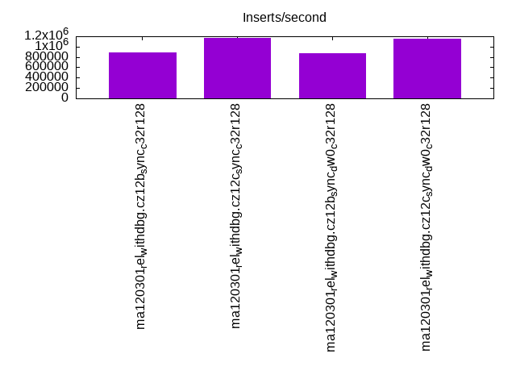
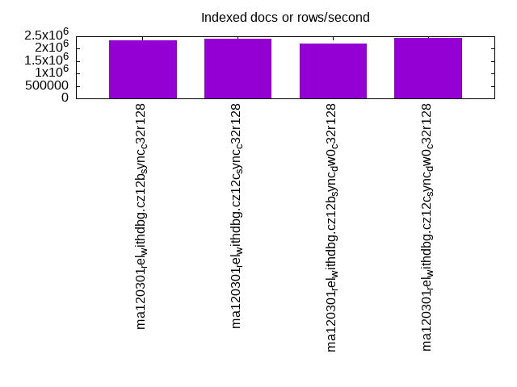
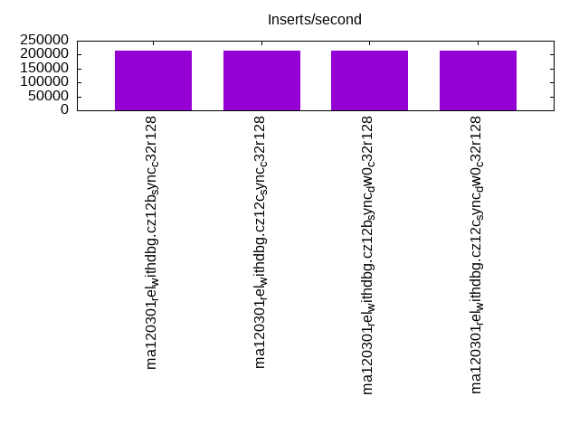
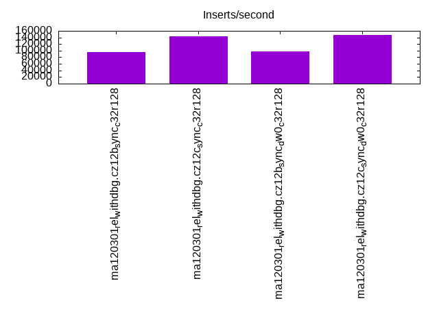
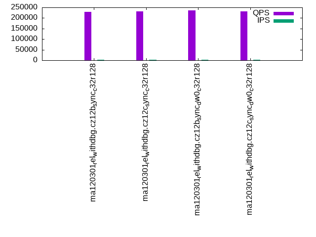
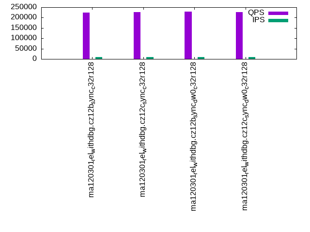
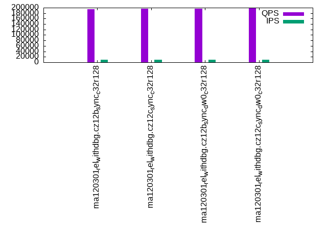
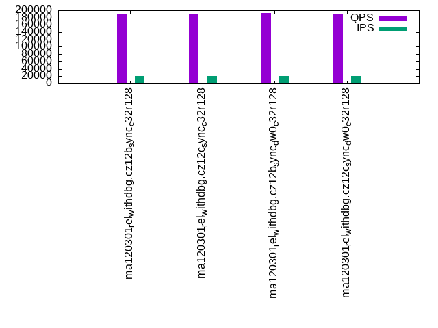

This is a report for the insert benchmark with 200M docs and 20 client(s). It is generated by scripts (bash, awk, sed) and Tufte might not be impressed. An overview of the insert benchmark is here and a short update is here. Below, by DBMS, I mean DBMS+version.config. An example is my8020.c10b40 where my means MySQL, 8020 is version 8.0.20 and c10b40 is the name for the configuration file.
The test server has 48 cores, 128G RAM and 2 NVMe devices using SW RAID. The benchmark was run with 20 clients and there were 1 or 3 connections per client (1 for queries or inserts without rate limits, 1+1 for rate limited inserts+deletes). It uses 20 tables with a table per client. It loads 10M rows per table without secondary indexes, creates 3 secondary indexes per table, then inserts 40m+10m rows per table with a delete per insert to avoid growing the table. It then does 6 read+write tests for 3600s each that do queries as fast as possible with 100,100,500,500,1000,1000 inserts/s and the same for deletes/s per client concurrent with the queries. The database is cached. Clients and the DBMS share one server.
The tested DBMS are:
The numbers are inserts/s for l.i0, l.i1 and l.i2, indexed docs (or rows) /s for l.x and queries/s for qr100, qp100 thru qr1000, qp1000" The values are the average rate over the entire test for inserts (IPS) and queries (QPS). The range of values for IPS and QPS is split into 3 parts: bottom 25%, middle 50%, top 25%. Values in the bottom 25% have a red background, values in the top 25% have a green background and values in the middle have no color. A gray background is used for values that can be ignored because the DBMS did not sustain the target insert rate. Red backgrounds are not used when the minimum value is within 80% of the max value.
| dbms | l.i0 | l.x | l.i1 | l.i2 | qr100 | qp100 | qr500 | qp500 | qr1000 | qp1000 |
|---|---|---|---|---|---|---|---|---|---|---|
| ma120301_rel_withdbg.cz12b_sync_c32r128 | 881057 | 2352942 | 215169 | 95057 | 228296 | 196579 | 224219 | 193640 | 219830 | 188725 |
| ma120301_rel_withdbg.cz12c_sync_c32r128 | 1162791 | 2409640 | 213675 | 144404 | 230541 | 199994 | 226688 | 196870 | 222669 | 191156 |
| ma120301_rel_withdbg.cz12b_sync_dw0_c32r128 | 877193 | 2222223 | 215343 | 98087 | 234965 | 200836 | 229848 | 196913 | 225836 | 192036 |
| ma120301_rel_withdbg.cz12c_sync_dw0_c32r128 | 1156069 | 2439026 | 215112 | 146951 | 231588 | 200164 | 227753 | 197216 | 223703 | 191583 |
This table has relative throughput, throughput for the DBMS relative to the DBMS in the first line, using the absolute throughput from the previous table. Values less than 0.95 have a yellow background. Values greater than 1.05 have a blue background.
| dbms | l.i0 | l.x | l.i1 | l.i2 | qr100 | qp100 | qr500 | qp500 | qr1000 | qp1000 |
|---|---|---|---|---|---|---|---|---|---|---|
| ma120301_rel_withdbg.cz12b_sync_c32r128 | 1.00 | 1.00 | 1.00 | 1.00 | 1.00 | 1.00 | 1.00 | 1.00 | 1.00 | 1.00 |
| ma120301_rel_withdbg.cz12c_sync_c32r128 | 1.32 | 1.02 | 0.99 | 1.52 | 1.01 | 1.02 | 1.01 | 1.02 | 1.01 | 1.01 |
| ma120301_rel_withdbg.cz12b_sync_dw0_c32r128 | 1.00 | 0.94 | 1.00 | 1.03 | 1.03 | 1.02 | 1.03 | 1.02 | 1.03 | 1.02 |
| ma120301_rel_withdbg.cz12c_sync_dw0_c32r128 | 1.31 | 1.04 | 1.00 | 1.55 | 1.01 | 1.02 | 1.02 | 1.02 | 1.02 | 1.02 |
This lists the average rate of inserts/s for the tests that do inserts concurrent with queries. For such tests the query rate is listed in the table above. The read+write tests are setup so that the insert rate should match the target rate every second. Cells that are not at least 95% of the target have a red background to indicate a failure to satisfy the target.
| dbms | qr100.L1 | qp100.L2 | qr500.L3 | qp500.L4 | qr1000.L5 | qp1000.L6 |
|---|---|---|---|---|---|---|
| ma120301_rel_withdbg.cz12b_sync_c32r128 | 1987 | 1987 | 9934 | 9934 | 19878 | 19873 |
| ma120301_rel_withdbg.cz12c_sync_c32r128 | 1988 | 1988 | 9936 | 9936 | 19873 | 19873 |
| ma120301_rel_withdbg.cz12b_sync_dw0_c32r128 | 1988 | 1988 | 9936 | 9936 | 19873 | 19878 |
| ma120301_rel_withdbg.cz12c_sync_dw0_c32r128 | 1987 | 1987 | 9936 | 9936 | 19873 | 19878 |
| target | 2000 | 2000 | 10000 | 10000 | 20000 | 20000 |
l.i0: load without secondary indexes. Graphs for performance per 1-second interval are here.
Average throughput:

Insert response time histogram: each cell has the percentage of responses that take <= the time in the header and max is the max response time in seconds. For the max column values in the top 25% of the range have a red background and in the bottom 25% of the range have a green background. The red background is not used when the min value is within 80% of the max value.
| dbms | 256us | 1ms | 4ms | 16ms | 64ms | 256ms | 1s | 4s | 16s | gt | max |
|---|---|---|---|---|---|---|---|---|---|---|---|
| ma120301_rel_withdbg.cz12b_sync_c32r128 | 0.700 | 99.005 | 0.278 | 0.016 | 0.001 | 0.120 | |||||
| ma120301_rel_withdbg.cz12c_sync_c32r128 | 6.235 | 93.290 | 0.291 | 0.180 | 0.004 | 0.127 | |||||
| ma120301_rel_withdbg.cz12b_sync_dw0_c32r128 | 0.716 | 99.018 | 0.234 | 0.032 | 0.040 | ||||||
| ma120301_rel_withdbg.cz12c_sync_dw0_c32r128 | 6.106 | 93.440 | 0.268 | 0.178 | 0.008 | 0.127 |
Performance metrics for the DBMS listed above. Some are normalized by throughput, others are not. Legend for results is here.
ips qps rps rmbps wps wmbps rpq rkbpq wpi wkbpi csps cpups cspq cpupq dbgb1 dbgb2 rss maxop p50 p99 tag 881057 0 0 0.0 51689.8 371.1 0.000 0.000 0.059 0.431 281435 26.2 0.319 14 13.3 114.1 14.2 0.120 49347 45951 ma120301_rel_withdbg.cz12b_sync_c32r128 1162791 0 2 0.0 23855.0 476.5 0.000 0.000 0.021 0.420 280028 34.2 0.241 14 13.3 114.6 13.6 0.127 69325 61931 ma120301_rel_withdbg.cz12c_sync_c32r128 877193 0 1 0.0 50781.5 364.8 0.000 0.000 0.058 0.426 277058 25.9 0.316 14 13.3 114.1 14.2 0.040 49147 46350 ma120301_rel_withdbg.cz12b_sync_dw0_c32r128 1156069 0 2 0.0 23932.0 477.2 0.000 0.000 0.021 0.423 282168 34.2 0.244 14 13.3 114.6 13.6 0.127 68924 60457 ma120301_rel_withdbg.cz12c_sync_dw0_c32r128
Average values from iostat.
r/s rkB/s rrqm/s %rrqm r_await rareq-s w/s wkB/s wrqm/s %wrqm w_await wareq-s d/s dkB/s drqm/s %drqm d_await dareq-s f/s f_await aqu-sz %util 0.449 3.289 0.000 0.000 0.067 3.644 51689.8 380015 0.000 0.000 0.041 7.269 0.000 0.000 0.000 0.000 0.000 0.000 0.000 0.000 2.200 99.96 ma120301_rel_withdbg.cz12b_sync_c32r128 1.588 8.259 0.000 0.000 0.056 4.235 23855.0 487935 0.000 0.000 1.292 20.11 0.000 0.000 0.000 0.000 0.000 0.000 0.000 0.000 31.77 99.89 ma120301_rel_withdbg.cz12c_sync_c32r128 1.448 7.478 0.000 0.000 0.225 4.356 50781.5 373543 0.000 0.000 0.058 7.260 0.000 0.000 0.000 0.000 0.000 0.000 0.000 0.000 3.050 99.05 ma120301_rel_withdbg.cz12b_sync_dw0_c32r128 2.529 18.87 0.000 0.000 0.129 4.621 23932.0 488615 0.000 0.000 1.352 20.05 0.000 0.000 0.000 0.000 0.000 0.000 0.000 0.000 33.44 99.91 ma120301_rel_withdbg.cz12c_sync_dw0_c32r128
l.x: create secondary indexes.
Average throughput:

Performance metrics for the DBMS listed above. Some are normalized by throughput, others are not. Legend for results is here.
ips qps rps rmbps wps wmbps rpq rkbpq wpi wkbpi csps cpups cspq cpupq dbgb1 dbgb2 rss maxop p50 p99 tag 2352942 0 0 0.0 17469.7 1619.7 0.000 0.000 0.007 0.705 45129 24.1 0.019 5 28.1 129.0 23.5 0.033 NA NA ma120301_rel_withdbg.cz12b_sync_c32r128 2409640 0 3 0.0 17692.5 1697.3 0.000 0.000 0.007 0.721 43212 24.9 0.018 5 28.1 129.5 23.3 0.003 NA NA ma120301_rel_withdbg.cz12c_sync_c32r128 2222223 0 1 0.0 16412.2 1527.9 0.000 0.000 0.007 0.704 44791 22.6 0.020 5 28.1 129.0 30.4 0.023 NA NA ma120301_rel_withdbg.cz12b_sync_dw0_c32r128 2439026 0 3 0.0 17780.4 1705.5 0.000 0.000 0.007 0.716 41850 25.1 0.017 5 28.1 129.5 24.0 0.008 NA NA ma120301_rel_withdbg.cz12c_sync_dw0_c32r128
Average values from iostat.
r/s rkB/s rrqm/s %rrqm r_await rareq-s w/s wkB/s wrqm/s %wrqm w_await wareq-s d/s dkB/s drqm/s %drqm d_await dareq-s f/s f_await aqu-sz %util 0.435 1.882 0.000 0.000 0.000 1.882 17469.7 1658591 0.000 0.000 11.17 89.00 0.000 0.000 0.000 0.000 0.000 0.000 0.000 0.000 233.7 90.22 ma120301_rel_withdbg.cz12b_sync_c32r128 2.888 15.35 0.000 0.000 0.650 3.953 17692.5 1738082 0.000 0.000 11.85 93.17 0.000 0.000 0.000 0.000 0.000 0.000 0.000 0.000 253.7 92.34 ma120301_rel_withdbg.cz12c_sync_c32r128 0.722 4.044 0.000 0.000 0.685 4.010 16412.2 1564603 0.000 0.000 13.66 93.11 0.000 0.000 0.000 0.000 0.000 0.000 0.000 0.000 265.1 92.08 ma120301_rel_withdbg.cz12b_sync_dw0_c32r128 3.225 18.75 0.000 0.000 0.766 6.060 17780.4 1746469 0.000 0.000 10.37 96.51 0.000 0.000 0.000 0.000 0.000 0.000 0.000 0.000 232.0 91.64 ma120301_rel_withdbg.cz12c_sync_dw0_c32r128
l.i1: continue load after secondary indexes created with 50 inserts per transaction. Graphs for performance per 1-second interval are here.
Average throughput:

Insert response time histogram: each cell has the percentage of responses that take <= the time in the header and max is the max response time in seconds. For the max column values in the top 25% of the range have a red background and in the bottom 25% of the range have a green background. The red background is not used when the min value is within 80% of the max value.
| dbms | 256us | 1ms | 4ms | 16ms | 64ms | 256ms | 1s | 4s | 16s | gt | max |
|---|---|---|---|---|---|---|---|---|---|---|---|
| ma120301_rel_withdbg.cz12b_sync_c32r128 | 64.012 | 35.421 | 0.564 | 0.003 | nonzero | 0.258 | |||||
| ma120301_rel_withdbg.cz12c_sync_c32r128 | 0.003 | 78.682 | 19.909 | 1.394 | 0.012 | nonzero | 0.270 | ||||
| ma120301_rel_withdbg.cz12b_sync_dw0_c32r128 | 65.555 | 33.846 | 0.594 | 0.006 | nonzero | 0.265 | |||||
| ma120301_rel_withdbg.cz12c_sync_dw0_c32r128 | 0.002 | 78.978 | 19.733 | 1.277 | 0.009 | nonzero | 0.269 |
Delete response time histogram: each cell has the percentage of responses that take <= the time in the header and max is the max response time in seconds. For the max column values in the top 25% of the range have a red background and in the bottom 25% of the range have a green background. The red background is not used when the min value is within 80% of the max value.
| dbms | 256us | 1ms | 4ms | 16ms | 64ms | 256ms | 1s | 4s | 16s | gt | max |
|---|---|---|---|---|---|---|---|---|---|---|---|
| ma120301_rel_withdbg.cz12b_sync_c32r128 | nonzero | 45.662 | 53.715 | 0.620 | 0.003 | 0.234 | |||||
| ma120301_rel_withdbg.cz12c_sync_c32r128 | 0.031 | 63.817 | 34.580 | 1.558 | 0.013 | 0.001 | 0.274 | ||||
| ma120301_rel_withdbg.cz12b_sync_dw0_c32r128 | nonzero | 47.266 | 52.081 | 0.647 | 0.006 | nonzero | 0.270 | ||||
| ma120301_rel_withdbg.cz12c_sync_dw0_c32r128 | 0.032 | 63.896 | 34.625 | 1.436 | 0.010 | 0.001 | 0.291 |
Performance metrics for the DBMS listed above. Some are normalized by throughput, others are not. Legend for results is here.
ips qps rps rmbps wps wmbps rpq rkbpq wpi wkbpi csps cpups cspq cpupq dbgb1 dbgb2 rss maxop p50 p99 tag 215169 0 1 0.0 32662.2 502.5 0.000 0.000 0.152 2.392 291364 58.8 1.354 131 43.9 146.1 46.5 0.258 11088 5244 ma120301_rel_withdbg.cz12b_sync_c32r128 213675 0 1 0.0 13667.3 469.3 0.000 0.000 0.064 2.249 215673 60.4 1.009 136 44.1 146.7 46.5 0.270 10988 5194 ma120301_rel_withdbg.cz12c_sync_c32r128 215343 0 1 0.0 32233.7 426.3 0.000 0.000 0.150 2.027 293482 59.0 1.363 132 44.0 146.1 46.4 0.265 11188 5244 ma120301_rel_withdbg.cz12b_sync_dw0_c32r128 215112 0 1 0.0 12891.1 390.8 0.000 0.000 0.060 1.861 217399 61.0 1.011 136 44.1 146.7 46.5 0.269 11138 5344 ma120301_rel_withdbg.cz12c_sync_dw0_c32r128
Average values from iostat.
r/s rkB/s rrqm/s %rrqm r_await rareq-s w/s wkB/s wrqm/s %wrqm w_await wareq-s d/s dkB/s drqm/s %drqm d_await dareq-s f/s f_await aqu-sz %util 0.786 8.688 0.000 0.000 0.158 6.321 32662.2 514609 0.000 0.000 0.063 15.83 0.000 0.000 0.000 0.000 0.000 0.000 0.000 0.000 2.050 96.49 ma120301_rel_withdbg.cz12b_sync_c32r128 0.908 10.30 0.000 0.000 0.121 3.849 13667.3 480516 0.000 0.000 0.243 34.98 0.000 0.000 0.000 0.000 0.000 0.000 0.000 0.000 3.345 90.67 ma120301_rel_withdbg.cz12c_sync_c32r128 1.216 13.44 0.000 0.000 0.101 6.872 32233.7 436486 0.000 0.000 0.062 13.61 0.000 0.000 0.000 0.000 0.000 0.000 0.000 0.000 2.004 96.29 ma120301_rel_withdbg.cz12b_sync_dw0_c32r128 0.926 9.381 0.000 0.000 0.091 4.962 12891.1 400219 0.000 0.000 0.246 30.85 0.000 0.000 0.000 0.000 0.000 0.000 0.000 0.000 3.189 90.36 ma120301_rel_withdbg.cz12c_sync_dw0_c32r128
l.i2: continue load after secondary indexes created with 5 inserts per transaction. Graphs for performance per 1-second interval are here.
Average throughput:

Insert response time histogram: each cell has the percentage of responses that take <= the time in the header and max is the max response time in seconds. For the max column values in the top 25% of the range have a red background and in the bottom 25% of the range have a green background. The red background is not used when the min value is within 80% of the max value.
| dbms | 256us | 1ms | 4ms | 16ms | 64ms | 256ms | 1s | 4s | 16s | gt | max |
|---|---|---|---|---|---|---|---|---|---|---|---|
| ma120301_rel_withdbg.cz12b_sync_c32r128 | 65.603 | 34.308 | 0.085 | 0.004 | 0.033 | ||||||
| ma120301_rel_withdbg.cz12c_sync_c32r128 | 0.064 | 95.025 | 4.814 | 0.091 | 0.007 | 0.031 | |||||
| ma120301_rel_withdbg.cz12b_sync_dw0_c32r128 | 68.825 | 30.974 | 0.182 | 0.019 | 0.048 | ||||||
| ma120301_rel_withdbg.cz12c_sync_dw0_c32r128 | 0.091 | 96.066 | 3.729 | 0.109 | 0.005 | 0.040 |
Delete response time histogram: each cell has the percentage of responses that take <= the time in the header and max is the max response time in seconds. For the max column values in the top 25% of the range have a red background and in the bottom 25% of the range have a green background. The red background is not used when the min value is within 80% of the max value.
| dbms | 256us | 1ms | 4ms | 16ms | 64ms | 256ms | 1s | 4s | 16s | gt | max |
|---|---|---|---|---|---|---|---|---|---|---|---|
| ma120301_rel_withdbg.cz12b_sync_c32r128 | 61.873 | 38.037 | 0.086 | 0.004 | 0.032 | ||||||
| ma120301_rel_withdbg.cz12c_sync_c32r128 | 0.065 | 94.918 | 4.920 | 0.090 | 0.007 | 0.029 | |||||
| ma120301_rel_withdbg.cz12b_sync_dw0_c32r128 | 64.895 | 34.903 | 0.183 | 0.019 | 0.048 | ||||||
| ma120301_rel_withdbg.cz12c_sync_dw0_c32r128 | 0.096 | 96.038 | 3.752 | 0.109 | 0.005 | 0.040 |
Performance metrics for the DBMS listed above. Some are normalized by throughput, others are not. Legend for results is here.
ips qps rps rmbps wps wmbps rpq rkbpq wpi wkbpi csps cpups cspq cpupq dbgb1 dbgb2 rss maxop p50 p99 tag 95057 0 1 0.0 49848.6 498.3 0.000 0.000 0.524 5.368 797084 36.4 8.385 184 43.9 146.1 44.8 0.033 4805 4495 ma120301_rel_withdbg.cz12b_sync_c32r128 144404 0 0 0.0 18109.2 468.9 0.000 0.000 0.125 3.325 906038 54.5 6.274 181 44.1 146.7 46.5 0.031 7232 6498 ma120301_rel_withdbg.cz12c_sync_c32r128 98087 0 1 0.0 50443.5 397.9 0.000 0.000 0.514 4.154 827338 37.5 8.435 184 44.0 146.1 44.6 0.048 4950 4710 ma120301_rel_withdbg.cz12b_sync_dw0_c32r128 146951 0 1 0.0 17572.9 374.0 0.000 0.000 0.120 2.606 932284 55.4 6.344 181 44.1 146.7 46.5 0.040 7357 6678 ma120301_rel_withdbg.cz12c_sync_dw0_c32r128
Average values from iostat.
r/s rkB/s rrqm/s %rrqm r_await rareq-s w/s wkB/s wrqm/s %wrqm w_await wareq-s d/s dkB/s drqm/s %drqm d_await dareq-s f/s f_await aqu-sz %util 1.073 46.99 0.000 0.000 0.070 6.078 49848.6 510285 0.000 0.000 0.052 10.24 0.000 0.000 0.000 0.000 0.000 0.000 0.000 0.000 2.573 99.87 ma120301_rel_withdbg.cz12b_sync_c32r128 0.474 4.918 0.000 0.000 0.134 2.981 18109.2 480132 0.000 0.000 0.205 26.53 0.000 0.000 0.000 0.000 0.000 0.000 0.000 0.000 3.708 99.86 ma120301_rel_withdbg.cz12c_sync_c32r128 0.794 13.05 0.000 0.000 0.097 7.176 50443.5 407409 0.000 0.000 0.097 8.078 0.000 0.000 0.000 0.000 0.000 0.000 0.000 0.000 4.852 99.92 ma120301_rel_withdbg.cz12b_sync_dw0_c32r128 1.050 15.36 0.000 0.000 0.089 7.480 17572.9 383018 0.000 0.000 0.224 21.81 0.000 0.000 0.000 0.000 0.000 0.000 0.000 0.000 3.922 99.89 ma120301_rel_withdbg.cz12c_sync_dw0_c32r128
qr100.L1: range queries with 100 insert/s per client. Graphs for performance per 1-second interval are here.
Average throughput:

Query response time histogram: each cell has the percentage of responses that take <= the time in the header and max is the max response time in seconds. For max values in the top 25% of the range have a red background and in the bottom 25% of the range have a green background. The red background is not used when the min value is within 80% of the max value.
| dbms | 256us | 1ms | 4ms | 16ms | 64ms | 256ms | 1s | 4s | 16s | gt | max |
|---|---|---|---|---|---|---|---|---|---|---|---|
| ma120301_rel_withdbg.cz12b_sync_c32r128 | 99.994 | 0.004 | 0.002 | nonzero | 0.013 | ||||||
| ma120301_rel_withdbg.cz12c_sync_c32r128 | 99.995 | 0.003 | 0.002 | nonzero | 0.012 | ||||||
| ma120301_rel_withdbg.cz12b_sync_dw0_c32r128 | 99.994 | 0.004 | 0.002 | nonzero | 0.012 | ||||||
| ma120301_rel_withdbg.cz12c_sync_dw0_c32r128 | 99.995 | 0.003 | 0.002 | nonzero | 0.011 |
Insert response time histogram: each cell has the percentage of responses that take <= the time in the header and max is the max response time in seconds. For max values in the top 25% of the range have a red background and in the bottom 25% of the range have a green background. The red background is not used when the min value is within 80% of the max value.
| dbms | 256us | 1ms | 4ms | 16ms | 64ms | 256ms | 1s | 4s | 16s | gt | max |
|---|---|---|---|---|---|---|---|---|---|---|---|
| ma120301_rel_withdbg.cz12b_sync_c32r128 | 99.651 | 0.297 | 0.051 | 0.032 | |||||||
| ma120301_rel_withdbg.cz12c_sync_c32r128 | 0.413 | 99.499 | 0.088 | 0.009 | |||||||
| ma120301_rel_withdbg.cz12b_sync_dw0_c32r128 | 98.878 | 1.078 | 0.043 | 0.027 | |||||||
| ma120301_rel_withdbg.cz12c_sync_dw0_c32r128 | 0.444 | 99.533 | 0.023 | 0.006 |
Delete response time histogram: each cell has the percentage of responses that take <= the time in the header and max is the max response time in seconds. For max values in the top 25% of the range have a red background and in the bottom 25% of the range have a green background. The red background is not used when the min value is within 80% of the max value.
| dbms | 256us | 1ms | 4ms | 16ms | 64ms | 256ms | 1s | 4s | 16s | gt | max |
|---|---|---|---|---|---|---|---|---|---|---|---|
| ma120301_rel_withdbg.cz12b_sync_c32r128 | 0.129 | 99.641 | 0.178 | 0.051 | 0.031 | ||||||
| ma120301_rel_withdbg.cz12c_sync_c32r128 | 12.787 | 87.165 | 0.049 | 0.009 | |||||||
| ma120301_rel_withdbg.cz12b_sync_dw0_c32r128 | 0.226 | 99.023 | 0.708 | 0.043 | 0.026 | ||||||
| ma120301_rel_withdbg.cz12c_sync_dw0_c32r128 | 13.194 | 86.795 | 0.010 | 0.006 |
Performance metrics for the DBMS listed above. Some are normalized by throughput, others are not. Legend for results is here.
ips qps rps rmbps wps wmbps rpq rkbpq wpi wkbpi csps cpups cspq cpupq dbgb1 dbgb2 rss maxop p50 p99 tag 1987 228296 0 0.0 488.5 3.8 0.000 0.000 0.246 1.946 1307553 45.4 5.727 95 43.9 146.1 44.5 0.013 11555 10964 ma120301_rel_withdbg.cz12b_sync_c32r128 1988 230541 0 0.0 95.5 2.7 0.000 0.000 0.048 1.417 1318206 45.5 5.718 95 44.1 146.7 46.2 0.012 11620 11060 ma120301_rel_withdbg.cz12c_sync_c32r128 1988 234965 0 0.0 455.7 3.7 0.000 0.000 0.229 1.886 1344524 44.8 5.722 92 44.0 146.1 44.4 0.012 11891 11348 ma120301_rel_withdbg.cz12b_sync_dw0_c32r128 1987 231588 0 0.0 100.8 2.8 0.000 0.000 0.051 1.439 1323128 45.2 5.713 94 44.1 146.7 46.2 0.011 11683 11076 ma120301_rel_withdbg.cz12c_sync_dw0_c32r128
Average values from iostat.
r/s rkB/s rrqm/s %rrqm r_await rareq-s w/s wkB/s wrqm/s %wrqm w_await wareq-s d/s dkB/s drqm/s %drqm d_await dareq-s f/s f_await aqu-sz %util 0.123 2.463 0.000 0.000 0.003 3.321 488.5 3868.2 0.000 0.000 0.034 7.933 0.000 0.000 0.000 0.000 0.000 0.000 0.000 0.000 0.017 2.322 ma120301_rel_withdbg.cz12b_sync_c32r128 0.023 0.470 0.000 0.000 0.000 0.261 95.50 2815.9 0.000 0.000 0.061 29.56 0.000 0.000 0.000 0.000 0.000 0.000 0.000 0.000 0.005 2.348 ma120301_rel_withdbg.cz12c_sync_c32r128 0.294 3.973 0.000 0.000 0.013 3.108 455.7 3749.7 0.000 0.000 0.036 8.271 0.000 0.000 0.000 0.000 0.000 0.000 0.000 0.000 0.017 2.548 ma120301_rel_withdbg.cz12b_sync_dw0_c32r128 0.233 3.918 0.000 0.000 0.012 1.677 100.8 2858.9 0.000 0.000 0.058 28.77 0.000 0.000 0.000 0.000 0.000 0.000 0.000 0.000 0.006 2.436 ma120301_rel_withdbg.cz12c_sync_dw0_c32r128
qp100.L2: point queries with 100 insert/s per client. Graphs for performance per 1-second interval are here.
Average throughput:
Query response time histogram: each cell has the percentage of responses that take <= the time in the header and max is the max response time in seconds. For max values in the top 25% of the range have a red background and in the bottom 25% of the range have a green background. The red background is not used when the min value is within 80% of the max value.
| dbms | 256us | 1ms | 4ms | 16ms | 64ms | 256ms | 1s | 4s | 16s | gt | max |
|---|---|---|---|---|---|---|---|---|---|---|---|
| ma120301_rel_withdbg.cz12b_sync_c32r128 | 99.991 | 0.006 | 0.002 | nonzero | 0.011 | ||||||
| ma120301_rel_withdbg.cz12c_sync_c32r128 | 99.992 | 0.005 | 0.002 | nonzero | 0.012 | ||||||
| ma120301_rel_withdbg.cz12b_sync_dw0_c32r128 | 99.992 | 0.006 | 0.002 | nonzero | 0.011 | ||||||
| ma120301_rel_withdbg.cz12c_sync_dw0_c32r128 | 99.992 | 0.006 | 0.002 | nonzero | 0.012 |
Insert response time histogram: each cell has the percentage of responses that take <= the time in the header and max is the max response time in seconds. For max values in the top 25% of the range have a red background and in the bottom 25% of the range have a green background. The red background is not used when the min value is within 80% of the max value.
| dbms | 256us | 1ms | 4ms | 16ms | 64ms | 256ms | 1s | 4s | 16s | gt | max |
|---|---|---|---|---|---|---|---|---|---|---|---|
| ma120301_rel_withdbg.cz12b_sync_c32r128 | 99.135 | 0.776 | 0.088 | 0.033 | |||||||
| ma120301_rel_withdbg.cz12c_sync_c32r128 | 0.513 | 99.205 | 0.244 | 0.038 | 0.052 | ||||||
| ma120301_rel_withdbg.cz12b_sync_dw0_c32r128 | 98.789 | 1.059 | 0.151 | 0.001 | 0.070 | ||||||
| ma120301_rel_withdbg.cz12c_sync_dw0_c32r128 | 0.465 | 99.251 | 0.271 | 0.013 | 0.027 |
Delete response time histogram: each cell has the percentage of responses that take <= the time in the header and max is the max response time in seconds. For max values in the top 25% of the range have a red background and in the bottom 25% of the range have a green background. The red background is not used when the min value is within 80% of the max value.
| dbms | 256us | 1ms | 4ms | 16ms | 64ms | 256ms | 1s | 4s | 16s | gt | max |
|---|---|---|---|---|---|---|---|---|---|---|---|
| ma120301_rel_withdbg.cz12b_sync_c32r128 | 0.099 | 99.297 | 0.518 | 0.086 | 0.033 | ||||||
| ma120301_rel_withdbg.cz12c_sync_c32r128 | 15.857 | 83.931 | 0.204 | 0.007 | 0.001 | 0.068 | |||||
| ma120301_rel_withdbg.cz12b_sync_dw0_c32r128 | 0.214 | 98.799 | 0.878 | 0.108 | 0.001 | 0.069 | |||||
| ma120301_rel_withdbg.cz12c_sync_dw0_c32r128 | 15.285 | 84.495 | 0.210 | 0.010 | 0.023 |
Performance metrics for the DBMS listed above. Some are normalized by throughput, others are not. Legend for results is here.
ips qps rps rmbps wps wmbps rpq rkbpq wpi wkbpi csps cpups cspq cpupq dbgb1 dbgb2 rss maxop p50 p99 tag 1987 196579 0 0.0 744.7 11.2 0.000 0.000 0.375 5.768 1140084 44.2 5.800 108 43.9 146.1 44.5 0.011 9893 9478 ma120301_rel_withdbg.cz12b_sync_c32r128 1988 199994 0 0.0 386.4 10.4 0.000 0.000 0.194 5.363 1158552 44.1 5.793 106 44.1 146.7 46.2 0.012 10085 9685 ma120301_rel_withdbg.cz12c_sync_c32r128 1988 200836 0 0.0 775.0 7.8 0.000 0.000 0.390 4.026 1164679 44.5 5.799 106 44.0 146.1 44.5 0.011 10101 9689 ma120301_rel_withdbg.cz12b_sync_dw0_c32r128 1987 200164 1 0.0 354.8 6.8 0.000 0.000 0.179 3.483 1159955 44.1 5.795 106 44.1 146.7 46.2 0.012 10072 9622 ma120301_rel_withdbg.cz12c_sync_dw0_c32r128
Average values from iostat.
r/s rkB/s rrqm/s %rrqm r_await rareq-s w/s wkB/s wrqm/s %wrqm w_await wareq-s d/s dkB/s drqm/s %drqm d_await dareq-s f/s f_await aqu-sz %util 0.022 0.246 0.000 0.000 0.012 0.522 744.7 11463.5 0.000 0.000 0.039 9.944 0.000 0.000 0.000 0.000 0.000 0.000 0.000 0.000 0.033 2.666 ma120301_rel_withdbg.cz12b_sync_c32r128 0.016 0.138 0.000 0.000 0.000 0.165 386.4 10660.9 0.000 0.000 0.074 27.88 0.000 0.000 0.000 0.000 0.000 0.000 0.000 0.000 0.031 3.037 ma120301_rel_withdbg.cz12c_sync_c32r128 0.038 1.098 0.000 0.000 0.001 0.794 775.0 8003.7 0.000 0.000 0.046 8.388 0.000 0.000 0.000 0.000 0.000 0.000 0.000 0.000 0.040 2.897 ma120301_rel_withdbg.cz12b_sync_dw0_c32r128 0.788 27.80 0.000 0.000 0.020 1.398 354.8 6921.1 0.000 0.000 0.066 26.93 0.000 0.000 0.000 0.000 0.000 0.000 0.000 0.000 0.022 3.189 ma120301_rel_withdbg.cz12c_sync_dw0_c32r128
qr500.L3: range queries with 500 insert/s per client. Graphs for performance per 1-second interval are here.
Average throughput:

Query response time histogram: each cell has the percentage of responses that take <= the time in the header and max is the max response time in seconds. For max values in the top 25% of the range have a red background and in the bottom 25% of the range have a green background. The red background is not used when the min value is within 80% of the max value.
| dbms | 256us | 1ms | 4ms | 16ms | 64ms | 256ms | 1s | 4s | 16s | gt | max |
|---|---|---|---|---|---|---|---|---|---|---|---|
| ma120301_rel_withdbg.cz12b_sync_c32r128 | 99.974 | 0.013 | 0.012 | 0.001 | nonzero | 0.018 | |||||
| ma120301_rel_withdbg.cz12c_sync_c32r128 | 99.979 | 0.011 | 0.010 | 0.001 | nonzero | 0.045 | |||||
| ma120301_rel_withdbg.cz12b_sync_dw0_c32r128 | 99.974 | 0.014 | 0.011 | 0.001 | nonzero | nonzero | 0.069 | ||||
| ma120301_rel_withdbg.cz12c_sync_dw0_c32r128 | 99.980 | 0.011 | 0.009 | 0.001 | nonzero | 0.034 |
Insert response time histogram: each cell has the percentage of responses that take <= the time in the header and max is the max response time in seconds. For max values in the top 25% of the range have a red background and in the bottom 25% of the range have a green background. The red background is not used when the min value is within 80% of the max value.
| dbms | 256us | 1ms | 4ms | 16ms | 64ms | 256ms | 1s | 4s | 16s | gt | max |
|---|---|---|---|---|---|---|---|---|---|---|---|
| ma120301_rel_withdbg.cz12b_sync_c32r128 | 87.792 | 12.156 | 0.053 | 0.046 | |||||||
| ma120301_rel_withdbg.cz12c_sync_c32r128 | 0.464 | 95.140 | 4.348 | 0.048 | 0.056 | ||||||
| ma120301_rel_withdbg.cz12b_sync_dw0_c32r128 | 85.402 | 14.377 | 0.220 | 0.001 | 0.075 | ||||||
| ma120301_rel_withdbg.cz12c_sync_dw0_c32r128 | 0.455 | 95.677 | 3.820 | 0.048 | 0.044 |
Delete response time histogram: each cell has the percentage of responses that take <= the time in the header and max is the max response time in seconds. For max values in the top 25% of the range have a red background and in the bottom 25% of the range have a green background. The red background is not used when the min value is within 80% of the max value.
| dbms | 256us | 1ms | 4ms | 16ms | 64ms | 256ms | 1s | 4s | 16s | gt | max |
|---|---|---|---|---|---|---|---|---|---|---|---|
| ma120301_rel_withdbg.cz12b_sync_c32r128 | 0.150 | 90.465 | 9.341 | 0.045 | 0.043 | ||||||
| ma120301_rel_withdbg.cz12c_sync_c32r128 | 10.797 | 85.818 | 3.360 | 0.026 | 0.050 | ||||||
| ma120301_rel_withdbg.cz12b_sync_dw0_c32r128 | 0.032 | 88.362 | 11.452 | 0.152 | nonzero | 0.072 | |||||
| ma120301_rel_withdbg.cz12c_sync_dw0_c32r128 | 10.917 | 86.146 | 2.903 | 0.033 | 0.046 |
Performance metrics for the DBMS listed above. Some are normalized by throughput, others are not. Legend for results is here.
ips qps rps rmbps wps wmbps rpq rkbpq wpi wkbpi csps cpups cspq cpupq dbgb1 dbgb2 rss maxop p50 p99 tag 9934 224219 0 0.0 2676.6 40.5 0.000 0.000 0.269 4.170 1289785 46.4 5.752 99 43.9 146.1 44.5 0.018 11275 10517 ma120301_rel_withdbg.cz12b_sync_c32r128 9936 226688 0 0.0 1562.9 44.6 0.000 0.000 0.157 4.595 1300021 46.5 5.735 98 44.1 146.7 46.2 0.045 11444 10744 ma120301_rel_withdbg.cz12c_sync_c32r128 9936 229848 0 0.0 2459.4 28.9 0.000 0.000 0.248 2.977 1320711 46.2 5.746 96 44.0 146.1 44.5 0.069 11619 10772 ma120301_rel_withdbg.cz12b_sync_dw0_c32r128 9936 227753 2 0.1 1449.9 30.0 0.000 0.001 0.146 3.088 1308272 46.5 5.744 98 44.1 146.7 46.2 0.034 11491 10744 ma120301_rel_withdbg.cz12c_sync_dw0_c32r128
Average values from iostat.
r/s rkB/s rrqm/s %rrqm r_await rareq-s w/s wkB/s wrqm/s %wrqm w_await wareq-s d/s dkB/s drqm/s %drqm d_await dareq-s f/s f_await aqu-sz %util 0.076 0.529 0.000 0.000 0.003 0.719 2676.6 41421.9 0.000 0.000 0.047 12.78 0.000 0.000 0.000 0.000 0.000 0.000 0.000 0.000 0.135 7.689 ma120301_rel_withdbg.cz12b_sync_c32r128 0.015 0.060 0.000 0.000 0.005 0.132 1562.9 45653.3 0.000 0.000 0.117 32.67 0.000 0.000 0.000 0.000 0.000 0.000 0.000 0.000 0.149 7.571 ma120301_rel_withdbg.cz12c_sync_c32r128 0.038 0.403 0.000 0.000 0.008 0.743 2459.4 29577.1 0.000 0.000 0.061 11.41 0.000 0.000 0.000 0.000 0.000 0.000 0.000 0.000 0.146 7.196 ma120301_rel_withdbg.cz12b_sync_dw0_c32r128 2.112 134.5 0.000 0.000 0.004 1.239 1449.9 30688.1 0.000 0.000 0.102 28.92 0.000 0.000 0.000 0.000 0.000 0.000 0.000 0.000 0.122 7.466 ma120301_rel_withdbg.cz12c_sync_dw0_c32r128
qp500.L4: point queries with 500 insert/s per client. Graphs for performance per 1-second interval are here.
Average throughput:

Query response time histogram: each cell has the percentage of responses that take <= the time in the header and max is the max response time in seconds. For max values in the top 25% of the range have a red background and in the bottom 25% of the range have a green background. The red background is not used when the min value is within 80% of the max value.
| dbms | 256us | 1ms | 4ms | 16ms | 64ms | 256ms | 1s | 4s | 16s | gt | max |
|---|---|---|---|---|---|---|---|---|---|---|---|
| ma120301_rel_withdbg.cz12b_sync_c32r128 | 99.959 | 0.029 | 0.012 | nonzero | 0.014 | ||||||
| ma120301_rel_withdbg.cz12c_sync_c32r128 | 99.968 | 0.021 | 0.010 | nonzero | nonzero | 0.024 | |||||
| ma120301_rel_withdbg.cz12b_sync_dw0_c32r128 | 99.957 | 0.031 | 0.012 | nonzero | nonzero | 0.045 | |||||
| ma120301_rel_withdbg.cz12c_sync_dw0_c32r128 | 99.967 | 0.023 | 0.010 | nonzero | nonzero | 0.016 |
Insert response time histogram: each cell has the percentage of responses that take <= the time in the header and max is the max response time in seconds. For max values in the top 25% of the range have a red background and in the bottom 25% of the range have a green background. The red background is not used when the min value is within 80% of the max value.
| dbms | 256us | 1ms | 4ms | 16ms | 64ms | 256ms | 1s | 4s | 16s | gt | max |
|---|---|---|---|---|---|---|---|---|---|---|---|
| ma120301_rel_withdbg.cz12b_sync_c32r128 | 82.278 | 17.690 | 0.032 | 0.045 | |||||||
| ma120301_rel_withdbg.cz12c_sync_c32r128 | 0.370 | 93.760 | 5.827 | 0.043 | 0.046 | ||||||
| ma120301_rel_withdbg.cz12b_sync_dw0_c32r128 | 79.113 | 20.568 | 0.315 | 0.003 | 0.083 | ||||||
| ma120301_rel_withdbg.cz12c_sync_dw0_c32r128 | 0.538 | 93.310 | 6.100 | 0.053 | 0.039 |
Delete response time histogram: each cell has the percentage of responses that take <= the time in the header and max is the max response time in seconds. For max values in the top 25% of the range have a red background and in the bottom 25% of the range have a green background. The red background is not used when the min value is within 80% of the max value.
| dbms | 256us | 1ms | 4ms | 16ms | 64ms | 256ms | 1s | 4s | 16s | gt | max |
|---|---|---|---|---|---|---|---|---|---|---|---|
| ma120301_rel_withdbg.cz12b_sync_c32r128 | 0.091 | 86.090 | 13.793 | 0.027 | 0.045 | ||||||
| ma120301_rel_withdbg.cz12c_sync_c32r128 | 5.974 | 89.519 | 4.475 | 0.032 | 0.046 | ||||||
| ma120301_rel_withdbg.cz12b_sync_dw0_c32r128 | 0.018 | 83.084 | 16.667 | 0.229 | 0.002 | 0.080 | |||||
| ma120301_rel_withdbg.cz12c_sync_dw0_c32r128 | 6.258 | 88.978 | 4.726 | 0.038 | 0.038 |
Performance metrics for the DBMS listed above. Some are normalized by throughput, others are not. Legend for results is here.
ips qps rps rmbps wps wmbps rpq rkbpq wpi wkbpi csps cpups cspq cpupq dbgb1 dbgb2 rss maxop p50 p99 tag 9934 193640 0 0.0 2629.2 44.8 0.000 0.000 0.265 4.617 1128456 45.2 5.828 112 43.9 146.1 44.5 0.014 9766 9222 ma120301_rel_withdbg.cz12b_sync_c32r128 9936 196870 0 0.0 1554.4 44.4 0.000 0.000 0.156 4.577 1143943 45.3 5.811 110 44.1 146.7 46.2 0.024 9944 9414 ma120301_rel_withdbg.cz12c_sync_c32r128 9936 196913 0 0.0 2482.7 31.0 0.000 0.000 0.250 3.196 1148540 45.5 5.833 111 44.0 146.1 44.5 0.045 9909 9385 ma120301_rel_withdbg.cz12b_sync_dw0_c32r128 9936 197216 0 0.0 1420.7 29.7 0.000 0.000 0.143 3.057 1147828 45.4 5.820 110 44.1 146.7 46.3 0.016 9925 9398 ma120301_rel_withdbg.cz12c_sync_dw0_c32r128
Average values from iostat.
r/s rkB/s rrqm/s %rrqm r_await rareq-s w/s wkB/s wrqm/s %wrqm w_await wareq-s d/s dkB/s drqm/s %drqm d_await dareq-s f/s f_await aqu-sz %util 0.079 1.218 0.000 0.000 0.004 0.492 2629.2 45863.8 0.000 0.000 0.049 15.19 0.000 0.000 0.000 0.000 0.000 0.000 0.000 0.000 0.135 7.028 ma120301_rel_withdbg.cz12b_sync_c32r128 0.028 0.121 0.000 0.000 0.011 0.156 1554.4 45475.9 0.000 0.000 0.094 31.38 0.000 0.000 0.000 0.000 0.000 0.000 0.000 0.000 0.127 7.221 ma120301_rel_withdbg.cz12c_sync_c32r128 0.031 0.324 0.000 0.000 0.001 0.459 2482.7 31755.0 0.000 0.000 0.065 12.31 0.000 0.000 0.000 0.000 0.000 0.000 0.000 0.000 0.151 6.865 ma120301_rel_withdbg.cz12b_sync_dw0_c32r128 0.071 0.799 0.000 0.000 0.004 1.328 1420.7 30372.7 0.000 0.000 0.081 26.67 0.000 0.000 0.000 0.000 0.000 0.000 0.000 0.000 0.090 6.878 ma120301_rel_withdbg.cz12c_sync_dw0_c32r128
qr1000.L5: range queries with 1000 insert/s per client. Graphs for performance per 1-second interval are here.
Average throughput:
Query response time histogram: each cell has the percentage of responses that take <= the time in the header and max is the max response time in seconds. For max values in the top 25% of the range have a red background and in the bottom 25% of the range have a green background. The red background is not used when the min value is within 80% of the max value.
| dbms | 256us | 1ms | 4ms | 16ms | 64ms | 256ms | 1s | 4s | 16s | gt | max |
|---|---|---|---|---|---|---|---|---|---|---|---|
| ma120301_rel_withdbg.cz12b_sync_c32r128 | 99.932 | 0.038 | 0.028 | 0.001 | nonzero | 0.022 | |||||
| ma120301_rel_withdbg.cz12c_sync_c32r128 | 99.939 | 0.034 | 0.027 | 0.001 | nonzero | 0.018 | |||||
| ma120301_rel_withdbg.cz12b_sync_dw0_c32r128 | 99.934 | 0.038 | 0.026 | 0.001 | nonzero | 0.062 | |||||
| ma120301_rel_withdbg.cz12c_sync_dw0_c32r128 | 99.939 | 0.035 | 0.025 | 0.001 | nonzero | 0.024 |
Insert response time histogram: each cell has the percentage of responses that take <= the time in the header and max is the max response time in seconds. For max values in the top 25% of the range have a red background and in the bottom 25% of the range have a green background. The red background is not used when the min value is within 80% of the max value.
| dbms | 256us | 1ms | 4ms | 16ms | 64ms | 256ms | 1s | 4s | 16s | gt | max |
|---|---|---|---|---|---|---|---|---|---|---|---|
| ma120301_rel_withdbg.cz12b_sync_c32r128 | 65.079 | 34.832 | 0.089 | 0.040 | |||||||
| ma120301_rel_withdbg.cz12c_sync_c32r128 | 0.869 | 80.818 | 18.283 | 0.030 | 0.030 | ||||||
| ma120301_rel_withdbg.cz12b_sync_dw0_c32r128 | 66.755 | 33.127 | 0.118 | 0.001 | 0.070 | ||||||
| ma120301_rel_withdbg.cz12c_sync_dw0_c32r128 | 0.972 | 80.853 | 18.128 | 0.047 | 0.034 |
Delete response time histogram: each cell has the percentage of responses that take <= the time in the header and max is the max response time in seconds. For max values in the top 25% of the range have a red background and in the bottom 25% of the range have a green background. The red background is not used when the min value is within 80% of the max value.
| dbms | 256us | 1ms | 4ms | 16ms | 64ms | 256ms | 1s | 4s | 16s | gt | max |
|---|---|---|---|---|---|---|---|---|---|---|---|
| ma120301_rel_withdbg.cz12b_sync_c32r128 | 0.003 | 68.302 | 31.623 | 0.072 | 0.039 | ||||||
| ma120301_rel_withdbg.cz12c_sync_c32r128 | 2.485 | 80.779 | 16.713 | 0.023 | 0.028 | ||||||
| ma120301_rel_withdbg.cz12b_sync_dw0_c32r128 | 0.005 | 69.739 | 30.161 | 0.095 | nonzero | 0.065 | |||||
| ma120301_rel_withdbg.cz12c_sync_dw0_c32r128 | 2.843 | 80.402 | 16.716 | 0.039 | 0.033 |
Performance metrics for the DBMS listed above. Some are normalized by throughput, others are not. Legend for results is here.
ips qps rps rmbps wps wmbps rpq rkbpq wpi wkbpi csps cpups cspq cpupq dbgb1 dbgb2 rss maxop p50 p99 tag 19878 219830 0 0.0 4111.0 78.5 0.000 0.000 0.207 4.041 1267024 47.5 5.764 104 43.9 146.1 44.5 0.022 11092 10376 ma120301_rel_withdbg.cz12b_sync_c32r128 19873 222669 2 0.1 2824.0 87.8 0.000 0.000 0.142 4.525 1279285 47.6 5.745 103 44.1 146.7 46.2 0.018 11188 10580 ma120301_rel_withdbg.cz12c_sync_c32r128 19873 225836 0 0.0 3932.4 55.3 0.000 0.000 0.198 2.852 1301948 47.6 5.765 101 44.0 146.1 44.5 0.062 11428 10629 ma120301_rel_withdbg.cz12b_sync_dw0_c32r128 19873 223703 0 0.0 2576.0 58.3 0.000 0.000 0.130 3.004 1286161 47.5 5.749 102 44.1 146.7 46.3 0.024 11292 10596 ma120301_rel_withdbg.cz12c_sync_dw0_c32r128
Average values from iostat.
r/s rkB/s rrqm/s %rrqm r_await rareq-s w/s wkB/s wrqm/s %wrqm w_await wareq-s d/s dkB/s drqm/s %drqm d_await dareq-s f/s f_await aqu-sz %util 0.082 0.945 0.000 0.000 0.037 0.937 4111.0 80334.6 0.000 0.000 0.052 18.45 0.000 0.000 0.000 0.000 0.000 0.000 0.000 0.000 0.218 11.90 ma120301_rel_withdbg.cz12b_sync_c32r128 1.745 57.11 0.000 0.000 0.009 0.488 2824.0 89930.9 0.000 0.000 0.090 33.67 0.000 0.000 0.000 0.000 0.000 0.000 0.000 0.000 0.227 11.23 ma120301_rel_withdbg.cz12c_sync_c32r128 0.091 1.009 0.000 0.000 0.007 1.011 3932.4 56675.2 0.000 0.000 0.045 14.27 0.000 0.000 0.000 0.000 0.000 0.000 0.000 0.000 0.167 11.72 ma120301_rel_withdbg.cz12b_sync_dw0_c32r128 0.388 23.50 0.000 0.000 0.026 1.890 2576.0 59700.7 0.000 0.000 0.065 26.22 0.000 0.000 0.000 0.000 0.000 0.000 0.000 0.000 0.139 11.11 ma120301_rel_withdbg.cz12c_sync_dw0_c32r128
qp1000.L6: point queries with 1000 insert/s per client. Graphs for performance per 1-second interval are here.
Average throughput:

Query response time histogram: each cell has the percentage of responses that take <= the time in the header and max is the max response time in seconds. For max values in the top 25% of the range have a red background and in the bottom 25% of the range have a green background. The red background is not used when the min value is within 80% of the max value.
| dbms | 256us | 1ms | 4ms | 16ms | 64ms | 256ms | 1s | 4s | 16s | gt | max |
|---|---|---|---|---|---|---|---|---|---|---|---|
| ma120301_rel_withdbg.cz12b_sync_c32r128 | 99.863 | 0.113 | 0.024 | nonzero | nonzero | 0.026 | |||||
| ma120301_rel_withdbg.cz12c_sync_c32r128 | 99.853 | 0.125 | 0.022 | nonzero | nonzero | 0.025 | |||||
| ma120301_rel_withdbg.cz12b_sync_dw0_c32r128 | 99.855 | 0.122 | 0.023 | nonzero | nonzero | 0.030 | |||||
| ma120301_rel_withdbg.cz12c_sync_dw0_c32r128 | 99.847 | 0.132 | 0.020 | nonzero | nonzero | 0.025 |
Insert response time histogram: each cell has the percentage of responses that take <= the time in the header and max is the max response time in seconds. For max values in the top 25% of the range have a red background and in the bottom 25% of the range have a green background. The red background is not used when the min value is within 80% of the max value.
| dbms | 256us | 1ms | 4ms | 16ms | 64ms | 256ms | 1s | 4s | 16s | gt | max |
|---|---|---|---|---|---|---|---|---|---|---|---|
| ma120301_rel_withdbg.cz12b_sync_c32r128 | 62.869 | 37.100 | 0.031 | 0.044 | |||||||
| ma120301_rel_withdbg.cz12c_sync_c32r128 | 0.009 | 75.238 | 24.641 | 0.111 | 0.044 | ||||||
| ma120301_rel_withdbg.cz12b_sync_dw0_c32r128 | 61.550 | 38.350 | 0.099 | 0.001 | 0.085 | ||||||
| ma120301_rel_withdbg.cz12c_sync_dw0_c32r128 | 0.012 | 73.529 | 26.339 | 0.121 | 0.051 |
Delete response time histogram: each cell has the percentage of responses that take <= the time in the header and max is the max response time in seconds. For max values in the top 25% of the range have a red background and in the bottom 25% of the range have a green background. The red background is not used when the min value is within 80% of the max value.
| dbms | 256us | 1ms | 4ms | 16ms | 64ms | 256ms | 1s | 4s | 16s | gt | max |
|---|---|---|---|---|---|---|---|---|---|---|---|
| ma120301_rel_withdbg.cz12b_sync_c32r128 | 0.009 | 66.869 | 33.098 | 0.024 | 0.033 | ||||||
| ma120301_rel_withdbg.cz12c_sync_c32r128 | 0.127 | 77.727 | 22.053 | 0.093 | 0.039 | ||||||
| ma120301_rel_withdbg.cz12b_sync_dw0_c32r128 | 0.009 | 65.447 | 34.455 | 0.089 | nonzero | 0.073 | |||||
| ma120301_rel_withdbg.cz12c_sync_dw0_c32r128 | 0.100 | 76.188 | 23.611 | 0.100 | 0.054 |
Performance metrics for the DBMS listed above. Some are normalized by throughput, others are not. Legend for results is here.
ips qps rps rmbps wps wmbps rpq rkbpq wpi wkbpi csps cpups cspq cpupq dbgb1 dbgb2 rss maxop p50 p99 tag 19873 188725 0 0.0 4482.2 82.2 0.000 0.000 0.226 4.238 1107545 47.4 5.869 121 43.9 146.1 44.5 0.026 9526 8918 ma120301_rel_withdbg.cz12b_sync_c32r128 19873 191156 0 0.0 2843.2 87.5 0.000 0.000 0.143 4.510 1118890 47.5 5.853 119 44.1 146.7 46.2 0.025 9669 9110 ma120301_rel_withdbg.cz12c_sync_c32r128 19878 192036 0 0.0 4228.2 57.3 0.000 0.000 0.213 2.950 1126836 47.4 5.868 118 44.0 146.1 44.5 0.030 9717 9046 ma120301_rel_withdbg.cz12b_sync_dw0_c32r128 19878 191583 0 0.0 2613.0 58.2 0.000 0.000 0.131 3.000 1121755 47.5 5.855 119 44.1 146.7 46.3 0.025 9621 9014 ma120301_rel_withdbg.cz12c_sync_dw0_c32r128
Average values from iostat.
r/s rkB/s rrqm/s %rrqm r_await rareq-s w/s wkB/s wrqm/s %wrqm w_await wareq-s d/s dkB/s drqm/s %drqm d_await dareq-s f/s f_await aqu-sz %util 0.409 3.682 0.000 0.000 0.032 1.613 4482.2 84223.2 0.000 0.000 0.049 18.23 0.000 0.000 0.000 0.000 0.000 0.000 0.000 0.000 0.223 11.92 ma120301_rel_withdbg.cz12b_sync_c32r128 0.062 0.484 0.000 0.000 0.012 0.490 2843.2 89621.8 0.000 0.000 0.073 32.28 0.000 0.000 0.000 0.000 0.000 0.000 0.000 0.000 0.201 10.32 ma120301_rel_withdbg.cz12c_sync_c32r128 0.143 1.385 0.000 0.000 0.028 1.650 4228.2 58645.2 0.000 0.000 0.042 13.76 0.000 0.000 0.000 0.000 0.000 0.000 0.000 0.000 0.178 11.76 ma120301_rel_withdbg.cz12b_sync_dw0_c32r128 0.244 2.520 0.000 0.000 0.021 2.412 2613.0 59638.2 0.000 0.000 0.055 23.99 0.000 0.000 0.000 0.000 0.000 0.000 0.000 0.000 0.127 10.42 ma120301_rel_withdbg.cz12c_sync_dw0_c32r128
l.i0: load without secondary indexes
Performance metrics for all DBMS, not just the ones listed above. Some are normalized by throughput, others are not. Legend for results is here.
ips qps rps rmbps wps wmbps rpq rkbpq wpi wkbpi csps cpups cspq cpupq dbgb1 dbgb2 rss maxop p50 p99 tag 881057 0 0 0.0 51689.8 371.1 0.000 0.000 0.059 0.431 281435 26.2 0.319 14 13.3 114.1 14.2 0.120 49347 45951 ma120301_rel_withdbg.cz12b_sync_c32r128 1162791 0 2 0.0 23855.0 476.5 0.000 0.000 0.021 0.420 280028 34.2 0.241 14 13.3 114.6 13.6 0.127 69325 61931 ma120301_rel_withdbg.cz12c_sync_c32r128 877193 0 1 0.0 50781.5 364.8 0.000 0.000 0.058 0.426 277058 25.9 0.316 14 13.3 114.1 14.2 0.040 49147 46350 ma120301_rel_withdbg.cz12b_sync_dw0_c32r128 1156069 0 2 0.0 23932.0 477.2 0.000 0.000 0.021 0.423 282168 34.2 0.244 14 13.3 114.6 13.6 0.127 68924 60457 ma120301_rel_withdbg.cz12c_sync_dw0_c32r128
l.x: create secondary indexes
Performance metrics for all DBMS, not just the ones listed above. Some are normalized by throughput, others are not. Legend for results is here.
ips qps rps rmbps wps wmbps rpq rkbpq wpi wkbpi csps cpups cspq cpupq dbgb1 dbgb2 rss maxop p50 p99 tag 2352942 0 0 0.0 17469.7 1619.7 0.000 0.000 0.007 0.705 45129 24.1 0.019 5 28.1 129.0 23.5 0.033 NA NA ma120301_rel_withdbg.cz12b_sync_c32r128 2409640 0 3 0.0 17692.5 1697.3 0.000 0.000 0.007 0.721 43212 24.9 0.018 5 28.1 129.5 23.3 0.003 NA NA ma120301_rel_withdbg.cz12c_sync_c32r128 2222223 0 1 0.0 16412.2 1527.9 0.000 0.000 0.007 0.704 44791 22.6 0.020 5 28.1 129.0 30.4 0.023 NA NA ma120301_rel_withdbg.cz12b_sync_dw0_c32r128 2439026 0 3 0.0 17780.4 1705.5 0.000 0.000 0.007 0.716 41850 25.1 0.017 5 28.1 129.5 24.0 0.008 NA NA ma120301_rel_withdbg.cz12c_sync_dw0_c32r128
l.i1: continue load after secondary indexes created with 50 inserts per transaction
Performance metrics for all DBMS, not just the ones listed above. Some are normalized by throughput, others are not. Legend for results is here.
ips qps rps rmbps wps wmbps rpq rkbpq wpi wkbpi csps cpups cspq cpupq dbgb1 dbgb2 rss maxop p50 p99 tag 215169 0 1 0.0 32662.2 502.5 0.000 0.000 0.152 2.392 291364 58.8 1.354 131 43.9 146.1 46.5 0.258 11088 5244 ma120301_rel_withdbg.cz12b_sync_c32r128 213675 0 1 0.0 13667.3 469.3 0.000 0.000 0.064 2.249 215673 60.4 1.009 136 44.1 146.7 46.5 0.270 10988 5194 ma120301_rel_withdbg.cz12c_sync_c32r128 215343 0 1 0.0 32233.7 426.3 0.000 0.000 0.150 2.027 293482 59.0 1.363 132 44.0 146.1 46.4 0.265 11188 5244 ma120301_rel_withdbg.cz12b_sync_dw0_c32r128 215112 0 1 0.0 12891.1 390.8 0.000 0.000 0.060 1.861 217399 61.0 1.011 136 44.1 146.7 46.5 0.269 11138 5344 ma120301_rel_withdbg.cz12c_sync_dw0_c32r128
l.i2: continue load after secondary indexes created with 5 inserts per transaction
Performance metrics for all DBMS, not just the ones listed above. Some are normalized by throughput, others are not. Legend for results is here.
ips qps rps rmbps wps wmbps rpq rkbpq wpi wkbpi csps cpups cspq cpupq dbgb1 dbgb2 rss maxop p50 p99 tag 95057 0 1 0.0 49848.6 498.3 0.000 0.000 0.524 5.368 797084 36.4 8.385 184 43.9 146.1 44.8 0.033 4805 4495 ma120301_rel_withdbg.cz12b_sync_c32r128 144404 0 0 0.0 18109.2 468.9 0.000 0.000 0.125 3.325 906038 54.5 6.274 181 44.1 146.7 46.5 0.031 7232 6498 ma120301_rel_withdbg.cz12c_sync_c32r128 98087 0 1 0.0 50443.5 397.9 0.000 0.000 0.514 4.154 827338 37.5 8.435 184 44.0 146.1 44.6 0.048 4950 4710 ma120301_rel_withdbg.cz12b_sync_dw0_c32r128 146951 0 1 0.0 17572.9 374.0 0.000 0.000 0.120 2.606 932284 55.4 6.344 181 44.1 146.7 46.5 0.040 7357 6678 ma120301_rel_withdbg.cz12c_sync_dw0_c32r128
qr100.L1: range queries with 100 insert/s per client
Performance metrics for all DBMS, not just the ones listed above. Some are normalized by throughput, others are not. Legend for results is here.
ips qps rps rmbps wps wmbps rpq rkbpq wpi wkbpi csps cpups cspq cpupq dbgb1 dbgb2 rss maxop p50 p99 tag 1987 228296 0 0.0 488.5 3.8 0.000 0.000 0.246 1.946 1307553 45.4 5.727 95 43.9 146.1 44.5 0.013 11555 10964 ma120301_rel_withdbg.cz12b_sync_c32r128 1988 230541 0 0.0 95.5 2.7 0.000 0.000 0.048 1.417 1318206 45.5 5.718 95 44.1 146.7 46.2 0.012 11620 11060 ma120301_rel_withdbg.cz12c_sync_c32r128 1988 234965 0 0.0 455.7 3.7 0.000 0.000 0.229 1.886 1344524 44.8 5.722 92 44.0 146.1 44.4 0.012 11891 11348 ma120301_rel_withdbg.cz12b_sync_dw0_c32r128 1987 231588 0 0.0 100.8 2.8 0.000 0.000 0.051 1.439 1323128 45.2 5.713 94 44.1 146.7 46.2 0.011 11683 11076 ma120301_rel_withdbg.cz12c_sync_dw0_c32r128
qp100.L2: point queries with 100 insert/s per client
Performance metrics for all DBMS, not just the ones listed above. Some are normalized by throughput, others are not. Legend for results is here.
ips qps rps rmbps wps wmbps rpq rkbpq wpi wkbpi csps cpups cspq cpupq dbgb1 dbgb2 rss maxop p50 p99 tag 1987 196579 0 0.0 744.7 11.2 0.000 0.000 0.375 5.768 1140084 44.2 5.800 108 43.9 146.1 44.5 0.011 9893 9478 ma120301_rel_withdbg.cz12b_sync_c32r128 1988 199994 0 0.0 386.4 10.4 0.000 0.000 0.194 5.363 1158552 44.1 5.793 106 44.1 146.7 46.2 0.012 10085 9685 ma120301_rel_withdbg.cz12c_sync_c32r128 1988 200836 0 0.0 775.0 7.8 0.000 0.000 0.390 4.026 1164679 44.5 5.799 106 44.0 146.1 44.5 0.011 10101 9689 ma120301_rel_withdbg.cz12b_sync_dw0_c32r128 1987 200164 1 0.0 354.8 6.8 0.000 0.000 0.179 3.483 1159955 44.1 5.795 106 44.1 146.7 46.2 0.012 10072 9622 ma120301_rel_withdbg.cz12c_sync_dw0_c32r128
qr500.L3: range queries with 500 insert/s per client
Performance metrics for all DBMS, not just the ones listed above. Some are normalized by throughput, others are not. Legend for results is here.
ips qps rps rmbps wps wmbps rpq rkbpq wpi wkbpi csps cpups cspq cpupq dbgb1 dbgb2 rss maxop p50 p99 tag 9934 224219 0 0.0 2676.6 40.5 0.000 0.000 0.269 4.170 1289785 46.4 5.752 99 43.9 146.1 44.5 0.018 11275 10517 ma120301_rel_withdbg.cz12b_sync_c32r128 9936 226688 0 0.0 1562.9 44.6 0.000 0.000 0.157 4.595 1300021 46.5 5.735 98 44.1 146.7 46.2 0.045 11444 10744 ma120301_rel_withdbg.cz12c_sync_c32r128 9936 229848 0 0.0 2459.4 28.9 0.000 0.000 0.248 2.977 1320711 46.2 5.746 96 44.0 146.1 44.5 0.069 11619 10772 ma120301_rel_withdbg.cz12b_sync_dw0_c32r128 9936 227753 2 0.1 1449.9 30.0 0.000 0.001 0.146 3.088 1308272 46.5 5.744 98 44.1 146.7 46.2 0.034 11491 10744 ma120301_rel_withdbg.cz12c_sync_dw0_c32r128
qp500.L4: point queries with 500 insert/s per client
Performance metrics for all DBMS, not just the ones listed above. Some are normalized by throughput, others are not. Legend for results is here.
ips qps rps rmbps wps wmbps rpq rkbpq wpi wkbpi csps cpups cspq cpupq dbgb1 dbgb2 rss maxop p50 p99 tag 9934 193640 0 0.0 2629.2 44.8 0.000 0.000 0.265 4.617 1128456 45.2 5.828 112 43.9 146.1 44.5 0.014 9766 9222 ma120301_rel_withdbg.cz12b_sync_c32r128 9936 196870 0 0.0 1554.4 44.4 0.000 0.000 0.156 4.577 1143943 45.3 5.811 110 44.1 146.7 46.2 0.024 9944 9414 ma120301_rel_withdbg.cz12c_sync_c32r128 9936 196913 0 0.0 2482.7 31.0 0.000 0.000 0.250 3.196 1148540 45.5 5.833 111 44.0 146.1 44.5 0.045 9909 9385 ma120301_rel_withdbg.cz12b_sync_dw0_c32r128 9936 197216 0 0.0 1420.7 29.7 0.000 0.000 0.143 3.057 1147828 45.4 5.820 110 44.1 146.7 46.3 0.016 9925 9398 ma120301_rel_withdbg.cz12c_sync_dw0_c32r128
qr1000.L5: range queries with 1000 insert/s per client
Performance metrics for all DBMS, not just the ones listed above. Some are normalized by throughput, others are not. Legend for results is here.
ips qps rps rmbps wps wmbps rpq rkbpq wpi wkbpi csps cpups cspq cpupq dbgb1 dbgb2 rss maxop p50 p99 tag 19878 219830 0 0.0 4111.0 78.5 0.000 0.000 0.207 4.041 1267024 47.5 5.764 104 43.9 146.1 44.5 0.022 11092 10376 ma120301_rel_withdbg.cz12b_sync_c32r128 19873 222669 2 0.1 2824.0 87.8 0.000 0.000 0.142 4.525 1279285 47.6 5.745 103 44.1 146.7 46.2 0.018 11188 10580 ma120301_rel_withdbg.cz12c_sync_c32r128 19873 225836 0 0.0 3932.4 55.3 0.000 0.000 0.198 2.852 1301948 47.6 5.765 101 44.0 146.1 44.5 0.062 11428 10629 ma120301_rel_withdbg.cz12b_sync_dw0_c32r128 19873 223703 0 0.0 2576.0 58.3 0.000 0.000 0.130 3.004 1286161 47.5 5.749 102 44.1 146.7 46.3 0.024 11292 10596 ma120301_rel_withdbg.cz12c_sync_dw0_c32r128
qp1000.L6: point queries with 1000 insert/s per client
Performance metrics for all DBMS, not just the ones listed above. Some are normalized by throughput, others are not. Legend for results is here.
ips qps rps rmbps wps wmbps rpq rkbpq wpi wkbpi csps cpups cspq cpupq dbgb1 dbgb2 rss maxop p50 p99 tag 19873 188725 0 0.0 4482.2 82.2 0.000 0.000 0.226 4.238 1107545 47.4 5.869 121 43.9 146.1 44.5 0.026 9526 8918 ma120301_rel_withdbg.cz12b_sync_c32r128 19873 191156 0 0.0 2843.2 87.5 0.000 0.000 0.143 4.510 1118890 47.5 5.853 119 44.1 146.7 46.2 0.025 9669 9110 ma120301_rel_withdbg.cz12c_sync_c32r128 19878 192036 0 0.0 4228.2 57.3 0.000 0.000 0.213 2.950 1126836 47.4 5.868 118 44.0 146.1 44.5 0.030 9717 9046 ma120301_rel_withdbg.cz12b_sync_dw0_c32r128 19878 191583 0 0.0 2613.0 58.2 0.000 0.000 0.131 3.000 1121755 47.5 5.855 119 44.1 146.7 46.3 0.025 9621 9014 ma120301_rel_withdbg.cz12c_sync_dw0_c32r128
Insert response time histogram
256us 1ms 4ms 16ms 64ms 256ms 1s 4s 16s gt max tag 0.000 0.700 99.005 0.278 0.016 0.001 0.000 0.000 0.000 0.000 0.120 ma120301_rel_withdbg.cz12b_sync_c32r128 0.000 6.235 93.290 0.291 0.180 0.004 0.000 0.000 0.000 0.000 0.127 ma120301_rel_withdbg.cz12c_sync_c32r128 0.000 0.716 99.018 0.234 0.032 0.000 0.000 0.000 0.000 0.000 0.040 ma120301_rel_withdbg.cz12b_sync_dw0_c32r128 0.000 6.106 93.440 0.268 0.178 0.008 0.000 0.000 0.000 0.000 0.127 ma120301_rel_withdbg.cz12c_sync_dw0_c32r128
TODO - determine whether there is data for create index response time
Insert response time histogram
256us 1ms 4ms 16ms 64ms 256ms 1s 4s 16s gt max tag 0.000 0.000 64.012 35.421 0.564 0.003 nonzero 0.000 0.000 0.000 0.258 ma120301_rel_withdbg.cz12b_sync_c32r128 0.000 0.003 78.682 19.909 1.394 0.012 nonzero 0.000 0.000 0.000 0.270 ma120301_rel_withdbg.cz12c_sync_c32r128 0.000 0.000 65.555 33.846 0.594 0.006 nonzero 0.000 0.000 0.000 0.265 ma120301_rel_withdbg.cz12b_sync_dw0_c32r128 0.000 0.002 78.978 19.733 1.277 0.009 nonzero 0.000 0.000 0.000 0.269 ma120301_rel_withdbg.cz12c_sync_dw0_c32r128
Delete response time histogram
256us 1ms 4ms 16ms 64ms 256ms 1s 4s 16s gt max tag 0.000 nonzero 45.662 53.715 0.620 0.003 0.000 0.000 0.000 0.000 0.234 ma120301_rel_withdbg.cz12b_sync_c32r128 0.000 0.031 63.817 34.580 1.558 0.013 0.001 0.000 0.000 0.000 0.274 ma120301_rel_withdbg.cz12c_sync_c32r128 0.000 nonzero 47.266 52.081 0.647 0.006 nonzero 0.000 0.000 0.000 0.270 ma120301_rel_withdbg.cz12b_sync_dw0_c32r128 0.000 0.032 63.896 34.625 1.436 0.010 0.001 0.000 0.000 0.000 0.291 ma120301_rel_withdbg.cz12c_sync_dw0_c32r128
Insert response time histogram
256us 1ms 4ms 16ms 64ms 256ms 1s 4s 16s gt max tag 0.000 65.603 34.308 0.085 0.004 0.000 0.000 0.000 0.000 0.000 0.033 ma120301_rel_withdbg.cz12b_sync_c32r128 0.064 95.025 4.814 0.091 0.007 0.000 0.000 0.000 0.000 0.000 0.031 ma120301_rel_withdbg.cz12c_sync_c32r128 0.000 68.825 30.974 0.182 0.019 0.000 0.000 0.000 0.000 0.000 0.048 ma120301_rel_withdbg.cz12b_sync_dw0_c32r128 0.091 96.066 3.729 0.109 0.005 0.000 0.000 0.000 0.000 0.000 0.040 ma120301_rel_withdbg.cz12c_sync_dw0_c32r128
Delete response time histogram
256us 1ms 4ms 16ms 64ms 256ms 1s 4s 16s gt max tag 0.000 61.873 38.037 0.086 0.004 0.000 0.000 0.000 0.000 0.000 0.032 ma120301_rel_withdbg.cz12b_sync_c32r128 0.065 94.918 4.920 0.090 0.007 0.000 0.000 0.000 0.000 0.000 0.029 ma120301_rel_withdbg.cz12c_sync_c32r128 0.000 64.895 34.903 0.183 0.019 0.000 0.000 0.000 0.000 0.000 0.048 ma120301_rel_withdbg.cz12b_sync_dw0_c32r128 0.096 96.038 3.752 0.109 0.005 0.000 0.000 0.000 0.000 0.000 0.040 ma120301_rel_withdbg.cz12c_sync_dw0_c32r128
Query response time histogram
256us 1ms 4ms 16ms 64ms 256ms 1s 4s 16s gt max tag 99.994 0.004 0.002 nonzero 0.000 0.000 0.000 0.000 0.000 0.000 0.013 ma120301_rel_withdbg.cz12b_sync_c32r128 99.995 0.003 0.002 nonzero 0.000 0.000 0.000 0.000 0.000 0.000 0.012 ma120301_rel_withdbg.cz12c_sync_c32r128 99.994 0.004 0.002 nonzero 0.000 0.000 0.000 0.000 0.000 0.000 0.012 ma120301_rel_withdbg.cz12b_sync_dw0_c32r128 99.995 0.003 0.002 nonzero 0.000 0.000 0.000 0.000 0.000 0.000 0.011 ma120301_rel_withdbg.cz12c_sync_dw0_c32r128
Insert response time histogram
256us 1ms 4ms 16ms 64ms 256ms 1s 4s 16s gt max tag 0.000 0.000 99.651 0.297 0.051 0.000 0.000 0.000 0.000 0.000 0.032 ma120301_rel_withdbg.cz12b_sync_c32r128 0.000 0.413 99.499 0.088 0.000 0.000 0.000 0.000 0.000 0.000 0.009 ma120301_rel_withdbg.cz12c_sync_c32r128 0.000 0.000 98.878 1.078 0.043 0.000 0.000 0.000 0.000 0.000 0.027 ma120301_rel_withdbg.cz12b_sync_dw0_c32r128 0.000 0.444 99.533 0.023 0.000 0.000 0.000 0.000 0.000 0.000 0.006 ma120301_rel_withdbg.cz12c_sync_dw0_c32r128
Delete response time histogram
256us 1ms 4ms 16ms 64ms 256ms 1s 4s 16s gt max tag 0.000 0.129 99.641 0.178 0.051 0.000 0.000 0.000 0.000 0.000 0.031 ma120301_rel_withdbg.cz12b_sync_c32r128 0.000 12.787 87.165 0.049 0.000 0.000 0.000 0.000 0.000 0.000 0.009 ma120301_rel_withdbg.cz12c_sync_c32r128 0.000 0.226 99.023 0.708 0.043 0.000 0.000 0.000 0.000 0.000 0.026 ma120301_rel_withdbg.cz12b_sync_dw0_c32r128 0.000 13.194 86.795 0.010 0.000 0.000 0.000 0.000 0.000 0.000 0.006 ma120301_rel_withdbg.cz12c_sync_dw0_c32r128
Query response time histogram
256us 1ms 4ms 16ms 64ms 256ms 1s 4s 16s gt max tag 99.991 0.006 0.002 nonzero 0.000 0.000 0.000 0.000 0.000 0.000 0.011 ma120301_rel_withdbg.cz12b_sync_c32r128 99.992 0.005 0.002 nonzero 0.000 0.000 0.000 0.000 0.000 0.000 0.012 ma120301_rel_withdbg.cz12c_sync_c32r128 99.992 0.006 0.002 nonzero 0.000 0.000 0.000 0.000 0.000 0.000 0.011 ma120301_rel_withdbg.cz12b_sync_dw0_c32r128 99.992 0.006 0.002 nonzero 0.000 0.000 0.000 0.000 0.000 0.000 0.012 ma120301_rel_withdbg.cz12c_sync_dw0_c32r128
Insert response time histogram
256us 1ms 4ms 16ms 64ms 256ms 1s 4s 16s gt max tag 0.000 0.000 99.135 0.776 0.088 0.000 0.000 0.000 0.000 0.000 0.033 ma120301_rel_withdbg.cz12b_sync_c32r128 0.000 0.513 99.205 0.244 0.038 0.000 0.000 0.000 0.000 0.000 0.052 ma120301_rel_withdbg.cz12c_sync_c32r128 0.000 0.000 98.789 1.059 0.151 0.001 0.000 0.000 0.000 0.000 0.070 ma120301_rel_withdbg.cz12b_sync_dw0_c32r128 0.000 0.465 99.251 0.271 0.013 0.000 0.000 0.000 0.000 0.000 0.027 ma120301_rel_withdbg.cz12c_sync_dw0_c32r128
Delete response time histogram
256us 1ms 4ms 16ms 64ms 256ms 1s 4s 16s gt max tag 0.000 0.099 99.297 0.518 0.086 0.000 0.000 0.000 0.000 0.000 0.033 ma120301_rel_withdbg.cz12b_sync_c32r128 0.000 15.857 83.931 0.204 0.007 0.001 0.000 0.000 0.000 0.000 0.068 ma120301_rel_withdbg.cz12c_sync_c32r128 0.000 0.214 98.799 0.878 0.108 0.001 0.000 0.000 0.000 0.000 0.069 ma120301_rel_withdbg.cz12b_sync_dw0_c32r128 0.000 15.285 84.495 0.210 0.010 0.000 0.000 0.000 0.000 0.000 0.023 ma120301_rel_withdbg.cz12c_sync_dw0_c32r128
Query response time histogram
256us 1ms 4ms 16ms 64ms 256ms 1s 4s 16s gt max tag 99.974 0.013 0.012 0.001 nonzero 0.000 0.000 0.000 0.000 0.000 0.018 ma120301_rel_withdbg.cz12b_sync_c32r128 99.979 0.011 0.010 0.001 nonzero 0.000 0.000 0.000 0.000 0.000 0.045 ma120301_rel_withdbg.cz12c_sync_c32r128 99.974 0.014 0.011 0.001 nonzero nonzero 0.000 0.000 0.000 0.000 0.069 ma120301_rel_withdbg.cz12b_sync_dw0_c32r128 99.980 0.011 0.009 0.001 nonzero 0.000 0.000 0.000 0.000 0.000 0.034 ma120301_rel_withdbg.cz12c_sync_dw0_c32r128
Insert response time histogram
256us 1ms 4ms 16ms 64ms 256ms 1s 4s 16s gt max tag 0.000 0.000 87.792 12.156 0.053 0.000 0.000 0.000 0.000 0.000 0.046 ma120301_rel_withdbg.cz12b_sync_c32r128 0.000 0.464 95.140 4.348 0.048 0.000 0.000 0.000 0.000 0.000 0.056 ma120301_rel_withdbg.cz12c_sync_c32r128 0.000 0.000 85.402 14.377 0.220 0.001 0.000 0.000 0.000 0.000 0.075 ma120301_rel_withdbg.cz12b_sync_dw0_c32r128 0.000 0.455 95.677 3.820 0.048 0.000 0.000 0.000 0.000 0.000 0.044 ma120301_rel_withdbg.cz12c_sync_dw0_c32r128
Delete response time histogram
256us 1ms 4ms 16ms 64ms 256ms 1s 4s 16s gt max tag 0.000 0.150 90.465 9.341 0.045 0.000 0.000 0.000 0.000 0.000 0.043 ma120301_rel_withdbg.cz12b_sync_c32r128 0.000 10.797 85.818 3.360 0.026 0.000 0.000 0.000 0.000 0.000 0.050 ma120301_rel_withdbg.cz12c_sync_c32r128 0.000 0.032 88.362 11.452 0.152 nonzero 0.000 0.000 0.000 0.000 0.072 ma120301_rel_withdbg.cz12b_sync_dw0_c32r128 0.000 10.917 86.146 2.903 0.033 0.000 0.000 0.000 0.000 0.000 0.046 ma120301_rel_withdbg.cz12c_sync_dw0_c32r128
Query response time histogram
256us 1ms 4ms 16ms 64ms 256ms 1s 4s 16s gt max tag 99.959 0.029 0.012 nonzero 0.000 0.000 0.000 0.000 0.000 0.000 0.014 ma120301_rel_withdbg.cz12b_sync_c32r128 99.968 0.021 0.010 nonzero nonzero 0.000 0.000 0.000 0.000 0.000 0.024 ma120301_rel_withdbg.cz12c_sync_c32r128 99.957 0.031 0.012 nonzero nonzero 0.000 0.000 0.000 0.000 0.000 0.045 ma120301_rel_withdbg.cz12b_sync_dw0_c32r128 99.967 0.023 0.010 nonzero nonzero 0.000 0.000 0.000 0.000 0.000 0.016 ma120301_rel_withdbg.cz12c_sync_dw0_c32r128
Insert response time histogram
256us 1ms 4ms 16ms 64ms 256ms 1s 4s 16s gt max tag 0.000 0.000 82.278 17.690 0.032 0.000 0.000 0.000 0.000 0.000 0.045 ma120301_rel_withdbg.cz12b_sync_c32r128 0.000 0.370 93.760 5.827 0.043 0.000 0.000 0.000 0.000 0.000 0.046 ma120301_rel_withdbg.cz12c_sync_c32r128 0.000 0.000 79.113 20.568 0.315 0.003 0.000 0.000 0.000 0.000 0.083 ma120301_rel_withdbg.cz12b_sync_dw0_c32r128 0.000 0.538 93.310 6.100 0.053 0.000 0.000 0.000 0.000 0.000 0.039 ma120301_rel_withdbg.cz12c_sync_dw0_c32r128
Delete response time histogram
256us 1ms 4ms 16ms 64ms 256ms 1s 4s 16s gt max tag 0.000 0.091 86.090 13.793 0.027 0.000 0.000 0.000 0.000 0.000 0.045 ma120301_rel_withdbg.cz12b_sync_c32r128 0.000 5.974 89.519 4.475 0.032 0.000 0.000 0.000 0.000 0.000 0.046 ma120301_rel_withdbg.cz12c_sync_c32r128 0.000 0.018 83.084 16.667 0.229 0.002 0.000 0.000 0.000 0.000 0.080 ma120301_rel_withdbg.cz12b_sync_dw0_c32r128 0.000 6.258 88.978 4.726 0.038 0.000 0.000 0.000 0.000 0.000 0.038 ma120301_rel_withdbg.cz12c_sync_dw0_c32r128
Query response time histogram
256us 1ms 4ms 16ms 64ms 256ms 1s 4s 16s gt max tag 99.932 0.038 0.028 0.001 nonzero 0.000 0.000 0.000 0.000 0.000 0.022 ma120301_rel_withdbg.cz12b_sync_c32r128 99.939 0.034 0.027 0.001 nonzero 0.000 0.000 0.000 0.000 0.000 0.018 ma120301_rel_withdbg.cz12c_sync_c32r128 99.934 0.038 0.026 0.001 nonzero 0.000 0.000 0.000 0.000 0.000 0.062 ma120301_rel_withdbg.cz12b_sync_dw0_c32r128 99.939 0.035 0.025 0.001 nonzero 0.000 0.000 0.000 0.000 0.000 0.024 ma120301_rel_withdbg.cz12c_sync_dw0_c32r128
Insert response time histogram
256us 1ms 4ms 16ms 64ms 256ms 1s 4s 16s gt max tag 0.000 0.000 65.079 34.832 0.089 0.000 0.000 0.000 0.000 0.000 0.040 ma120301_rel_withdbg.cz12b_sync_c32r128 0.000 0.869 80.818 18.283 0.030 0.000 0.000 0.000 0.000 0.000 0.030 ma120301_rel_withdbg.cz12c_sync_c32r128 0.000 0.000 66.755 33.127 0.118 0.001 0.000 0.000 0.000 0.000 0.070 ma120301_rel_withdbg.cz12b_sync_dw0_c32r128 0.000 0.972 80.853 18.128 0.047 0.000 0.000 0.000 0.000 0.000 0.034 ma120301_rel_withdbg.cz12c_sync_dw0_c32r128
Delete response time histogram
256us 1ms 4ms 16ms 64ms 256ms 1s 4s 16s gt max tag 0.000 0.003 68.302 31.623 0.072 0.000 0.000 0.000 0.000 0.000 0.039 ma120301_rel_withdbg.cz12b_sync_c32r128 0.000 2.485 80.779 16.713 0.023 0.000 0.000 0.000 0.000 0.000 0.028 ma120301_rel_withdbg.cz12c_sync_c32r128 0.000 0.005 69.739 30.161 0.095 nonzero 0.000 0.000 0.000 0.000 0.065 ma120301_rel_withdbg.cz12b_sync_dw0_c32r128 0.000 2.843 80.402 16.716 0.039 0.000 0.000 0.000 0.000 0.000 0.033 ma120301_rel_withdbg.cz12c_sync_dw0_c32r128
Query response time histogram
256us 1ms 4ms 16ms 64ms 256ms 1s 4s 16s gt max tag 99.863 0.113 0.024 nonzero nonzero 0.000 0.000 0.000 0.000 0.000 0.026 ma120301_rel_withdbg.cz12b_sync_c32r128 99.853 0.125 0.022 nonzero nonzero 0.000 0.000 0.000 0.000 0.000 0.025 ma120301_rel_withdbg.cz12c_sync_c32r128 99.855 0.122 0.023 nonzero nonzero 0.000 0.000 0.000 0.000 0.000 0.030 ma120301_rel_withdbg.cz12b_sync_dw0_c32r128 99.847 0.132 0.020 nonzero nonzero 0.000 0.000 0.000 0.000 0.000 0.025 ma120301_rel_withdbg.cz12c_sync_dw0_c32r128
Insert response time histogram
256us 1ms 4ms 16ms 64ms 256ms 1s 4s 16s gt max tag 0.000 0.000 62.869 37.100 0.031 0.000 0.000 0.000 0.000 0.000 0.044 ma120301_rel_withdbg.cz12b_sync_c32r128 0.000 0.009 75.238 24.641 0.111 0.000 0.000 0.000 0.000 0.000 0.044 ma120301_rel_withdbg.cz12c_sync_c32r128 0.000 0.000 61.550 38.350 0.099 0.001 0.000 0.000 0.000 0.000 0.085 ma120301_rel_withdbg.cz12b_sync_dw0_c32r128 0.000 0.012 73.529 26.339 0.121 0.000 0.000 0.000 0.000 0.000 0.051 ma120301_rel_withdbg.cz12c_sync_dw0_c32r128
Delete response time histogram
256us 1ms 4ms 16ms 64ms 256ms 1s 4s 16s gt max tag 0.000 0.009 66.869 33.098 0.024 0.000 0.000 0.000 0.000 0.000 0.033 ma120301_rel_withdbg.cz12b_sync_c32r128 0.000 0.127 77.727 22.053 0.093 0.000 0.000 0.000 0.000 0.000 0.039 ma120301_rel_withdbg.cz12c_sync_c32r128 0.000 0.009 65.447 34.455 0.089 nonzero 0.000 0.000 0.000 0.000 0.073 ma120301_rel_withdbg.cz12b_sync_dw0_c32r128 0.000 0.100 76.188 23.611 0.100 0.000 0.000 0.000 0.000 0.000 0.054 ma120301_rel_withdbg.cz12c_sync_dw0_c32r128